SOAPMonitor User's Guide
1.0 Version
Feedback: axis-dev@ws.apache.org
Table of Contents
Introduction
Web service developers often have the need to see the SOAP messages being used to invoke web services along with the results of those messages. The goal of the SOAP Monitor utility is to provide a way for these developers to monitor the SOAP messages being used without requiring any special configuration or restarting of the server.
What is SOAPMonitor ?
It's a utility what can be found in the org.apache.axis.utils package. It provides the monitoring capability described above to Web service developers.
When should I use it ?
It's a good opportunity for using this utility that you hope to monitor the SOAP messages for debugging. You can see all SOAP messages of what you want to monitor without any additional developments, special configurations or restarting of the application server.
Please note that it doesn't display any protocol specific data such as HTTP protocol headers. If you need to do this, you should use the TCP Monitor (tcpmon). Please see the Axis User's Guide for details on tcpmon.
Usage
Preparation
-
step 1: Create an account for the administrator
Open and edit the "webapps/axis/WEB-INF/users.lst".
The default account for administrator is "admin", set a password to anything you want.ex.) Like as follows; - i.e. "admin password".
user1 pass1 user2 user3 pass3 admin password
-
step 2: Setting CLASSPATH
Before running this utility, you'll need to make sure that your CLASSPATH includes:
- axis.jar
- jaxrpc.jar
- saaj.jar
- commons-logging.jar
- commons-discovery.jar
- activation.jar
- mail.jar
- A JAXP-1.1 compliant XML parser such as Xerces or Crimson
- That's all.
How to use it ?
- step 0: Make sure you have completed the preparation phase.
-
step 1: Start the SOAPMonitor application.
% java org.apache.axis.utils.SOAPMonitor [-u admin] [-w password] [-l axisURL]
or
% javaw org.apache.axis.utils.SOAPMonitor [-u admin] [-w password] [-l axisURL]
-
step 2: Login
Try login with the account which you specified as an administrator.
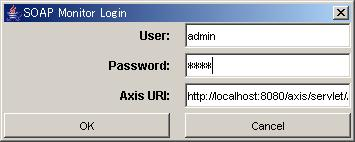
-
step 3: Please wait for a while.
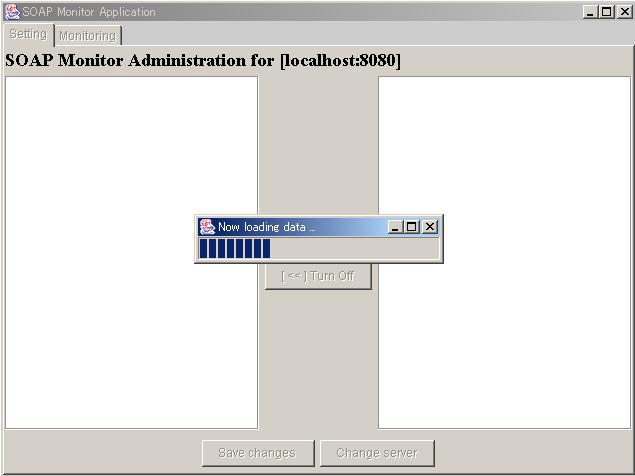
-
step 4: Administration screen will be displayed
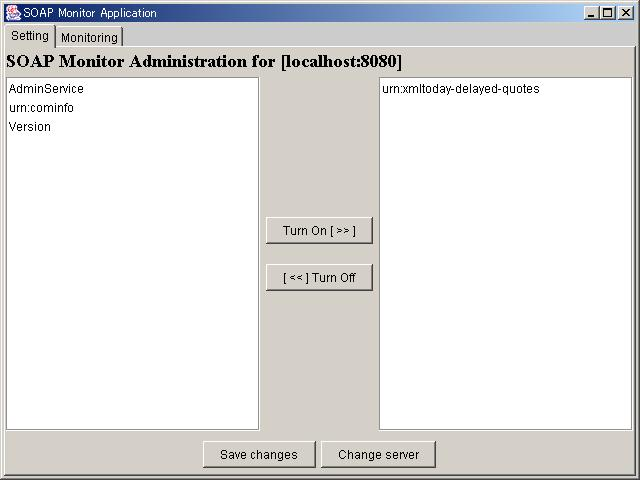
-
step 5-a: To enable monitoring
Click services to enable monitoring, then push "Turn On" button.
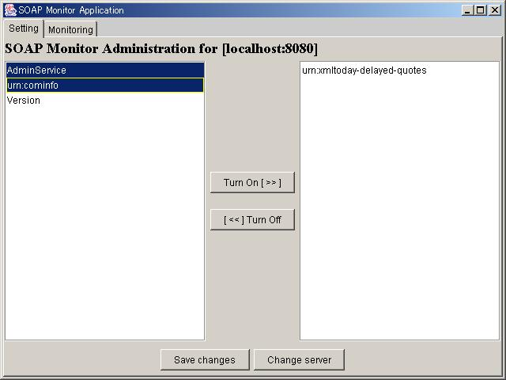
The following screen should be displayed.
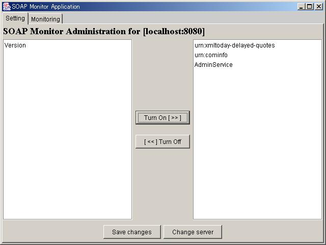
-
step 5-b: To disable monitoring
Click services to disable monitoring, then push "Turn Off" button.
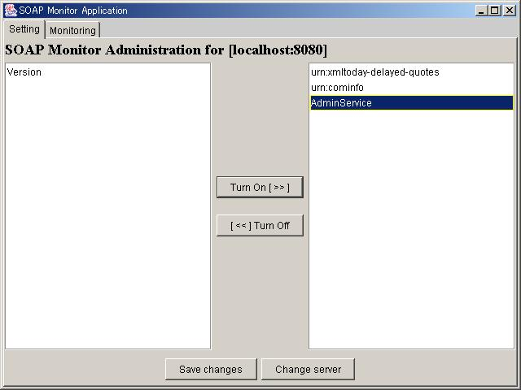
The following screen should be displayed.
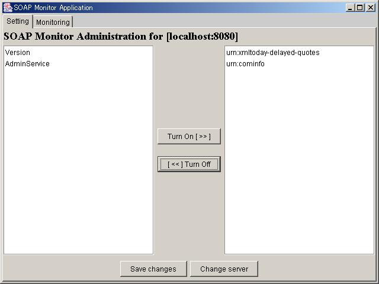
-
step 6: Save changes
Push "Save changes" button to save the current state.
The following screen should be displayed.
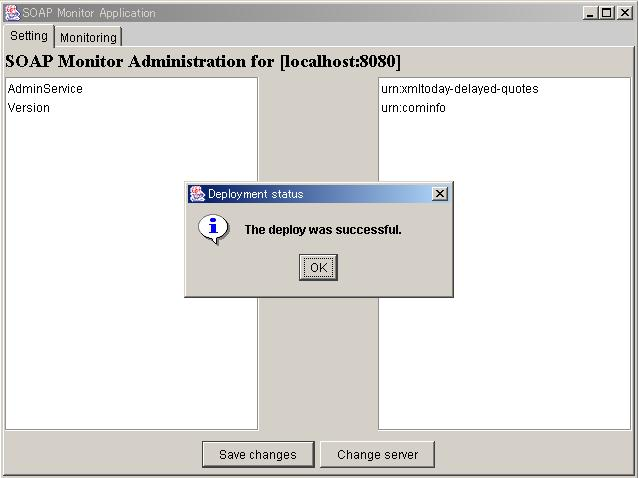
-
step 7: Monitoring
Push "Monitoring" tab to start monitoring with the current settings.
The following screen should be displayed.
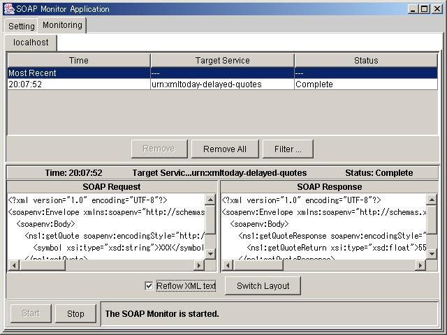
Appendixes
Version comparison chart
| Item | SOAPMonitorApplet(Old version) | SOAPMonitor(This version) |
|---|---|---|
| App Type | Applet | Swing application |
| Security | N/A (No authentication) | OK (Authentication added) |
| Install & Use |
|
Just do "java org.apache.axis.utils.SOAPMonitor" (within the axis.jar)
|
Error Messages
You may meet the following screens, if you have an access denied.
-
In case of "Unknown host":
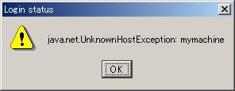
-
In case of "Port mismatch":
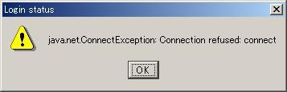
-
In case of "Authorization failure":
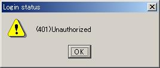